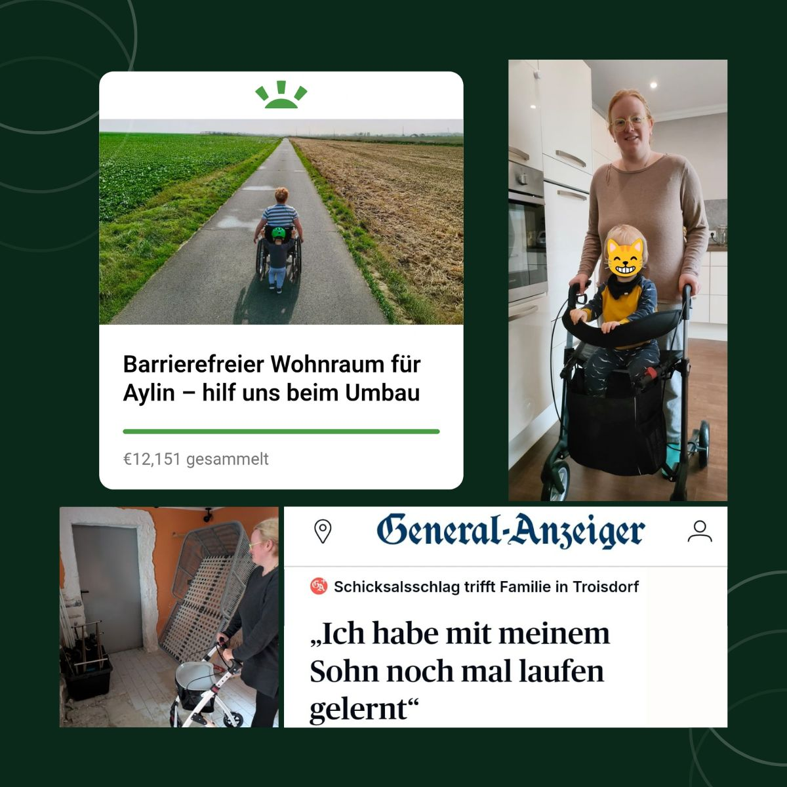

Der Umbau startet

Vor nicht mal zwei Wochen haben wir unsere GoFundMe-Kampagne gestartet, um meiner Frau Aylin nach ihrem Rückenmarkinfarkt den Alltag barrierefreier zu machen. 💛
Dank eurer unglaublichen Unterstützung können wir jetzt mit dem Umbau beginnen: Der Anbau wird entrümpelt, alte Fliesen kommen raus — der erste Schritt zu Aylins neuem Raum startet.
Wir sind dankbar, bewegt und voller Motivation. Jede Hilfe — ob durch Tipps, Kontakte oder Teilen — bringt uns weiter.
Aylin & Niklas